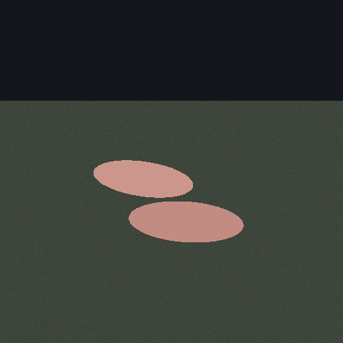
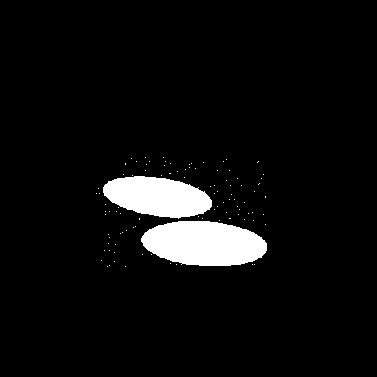
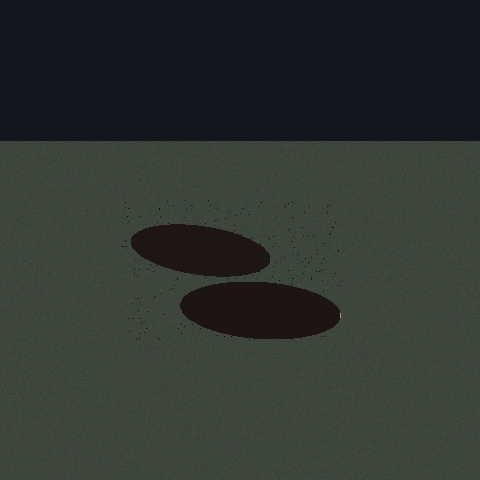
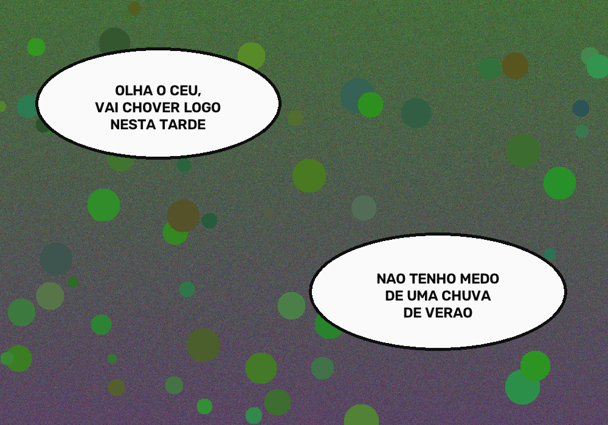
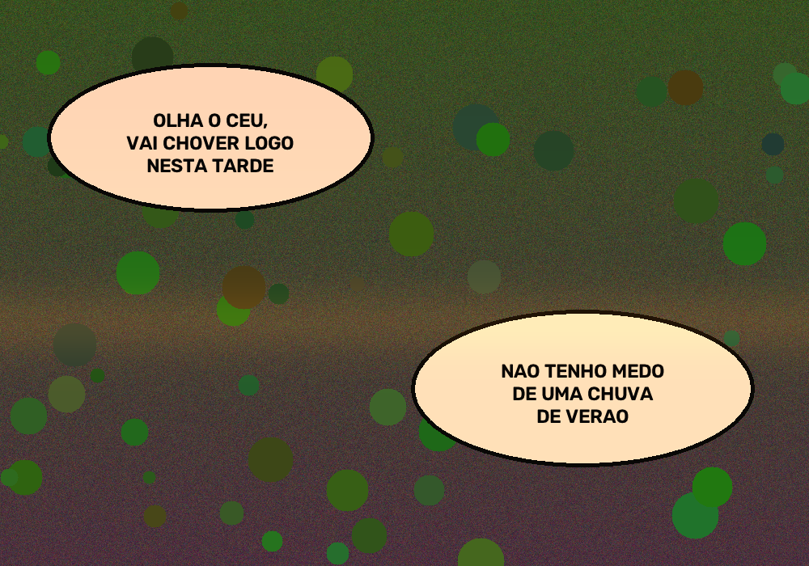
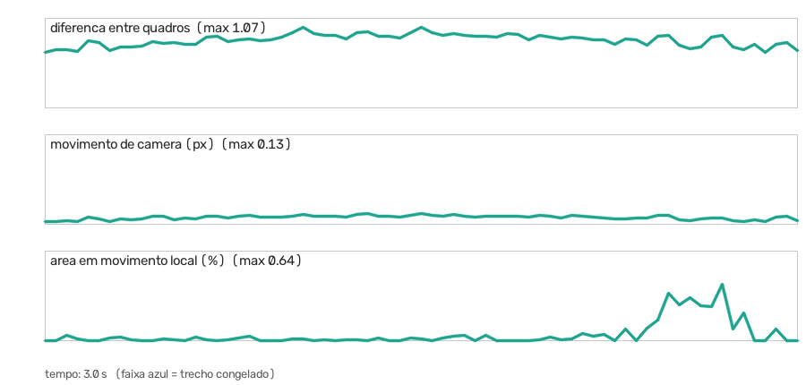

Seminário · Processamento Digital de Sinais e Imagens · UFG
Equipe PDI — Bruno Barros Ribeiro (202503994) · Sandro Xavier de Faria (202403925) · Josifran Moreira da Silva Junior
Bacharelado em Inteligência Artificial
Fazer vídeo com IA custa caro em qualquer cenário: R$ 0,50 por segundo de API a cada tentativa, ou ~R$ 100 mil de setup local (GPU de R$ 40 mil + fine-tuning contínuo de LLM para agentes especializados) rodando semanas antes do primeiro render. Técnicas clássicas de PDI barateiam a produção em duas frentes: pré-visualizar e julgar a cena no barato (animatic) e corrigir erros pontuais por código — sem nova chamada ao modelo.
IA gera imagem e vídeo (caixa-preta)
PDI corrige, anima e mede (código próprio, reproduzível)
MOTOR DE RENDER re-renderiza proceduralmente o aprovado (produção)
Livro-texto: MARQUES FILHO, O.; VIEIRA NETO, H. Processamento Digital de Imagens. Brasport, 1999 — Caps. 2 a 5 aplicados a código real.
Gerar vídeo com modelo de IA custa na ordem de 50 centavos por segundo. Um curta de 2 minutos custaria mais de R$ 60 por tentativa — e a primeira tentativa quase nunca é a boa.
As duas saídas são caras:
Ou seja: capex de R$ 100 mil + semanas de GPU alocada a treino, ou opex de R$ 0,50 por segundo em cada tentativa. Em ambos os cenários, cada segundo de vídeo efetivamente aproveitado carrega esse lastro. Quando o segundo de vídeo é o insumo caro, tudo que puder ser decidido antes, no barato, deve ser.



Um modelo de imagem errou um detalhe e repetiu o erro ao regenerar. Em vez de pagar por novas tentativas, uma regra clássica localiza o problema (separação por cor) e o corrige de forma determinística.
Mas isso é PDI ou "Photoshop"? É PDI dos dois jeitos — a diferença é quem aplica: a mão do operador (uma imagem por vez) ou o código (milhares por lote). A escala real do projeto está no próximo slide — e é ela que torna o manual impraticável.
Volumes reais, medidos no projeto — é por essa escala que a correção manual (imagem por imagem) está descartada.
~21 mil
quadros de cenas
processados pelo pipeline, cena por cena
300
imagens-base
pares imagem + texto-fonte, domínio público
~1,9 mil
referências visuais
filmes históricos (1903–2013) como guia estético
~6,5 mil
vídeos
saídas do pipeline em vários estágios
ENTRADA · obra em domínio público, livre para uso
IA · gerada por modelo de imagem (caixa-preta)
PDI · ROI, limiar de cor, mediana, filtros
PDI · remapeamento, paralaxe 2.5D, gaussiano
PDI · diferença entre quadros, SSIM, fluxo óptico
QUADROS FINAIS · parallax multicamada em batchmode
ÚLTIMO PASSO · modelo de vídeo processa os quadros aprovados


↺ Se a avaliação (5) reprova, o fluxo volta para a etapa 3 (correção) ou 2 (regeneração). Só o aprovado segue adiante.
Camera.Render → ReadPixels → JPG — gera os
quadros finais com parallax multicamada e camadas
animadas, proceduralmente, antes de o modelo de
vídeo entrar em cena;| Motor | Papel no pipeline | Determinismo |
|---|---|---|
| IA | Gera imagem (2) e finaliza vídeo (7) | Estocástico |
| PDI | Corrige (3), anima (4), julga (5) | Total |
| Motor gráfico | Renderiza quadros finais (6) | Total |
As etapas 3–5 são o escopo do repositório acadêmico; a 6 é a aplicação de produção do projeto.
"Onde há pele? Onde há legenda?" — marca sim/não para cada pixel. (Cap. 3.6 e 4.6)
Tira pontinhos soltos e fecha buracos, como limpar um desenho de criança. (Cap. 5.2 e 5.3)
Junta os pixels marcados em "ilhas" e desenha o contorno de cada uma. (Cap. 5.5)
O clássico "desfoque": tira ruído e bordas duras. (Cap. 2.4 e 4.2)
Sobrepor, misturar e recortar com máscaras — colagem digital. (Cap. 2.3 e 3.2)
Zoom, deriva e paralaxe: cada quadro do animatic nasce daqui. (Cap. 2.5)

gráfico real de avaliação gerado pelo avaliar_animatic.py — o "juiz" da etapa 5
Quem usa o quê: separar por cor e achar regiões → correção (3); suavizar e combinar → animatic (4); mover e redimensionar → câmera do animatic (4); medir movimento → avaliação (5).
O que o juiz pergunta: Quem se moveu — a câmera toda ou só coisas na cena? Quanto mudou de um quadro para o outro? Travou em trecho "congelado"? E o aviso: uma medida sozinha engana — um vídeo que só desliza a câmera "muda sem nada mudar". O juiz combina várias medidas.
Referência: MARQUES FILHO, O.; VIEIRA NETO, H. Processamento Digital de Imagens. Brasport, 1999.
pdi-seminario.Imagem sem direitos autorais → IA gera → PDI corrige → PDI anima → PDI julga → Motor gráfico renderiza os quadros → IA finaliza o vídeo
Cada motor faz o que faz de melhor: a IA, a criação estocástica; o PDI, a correção e a medição determinísticas; a engine, o render interativo/produtivo em tempo real.
"A IA gera; o PDI controla e corrige."
Equipe PDI · Seminário de Processamento Digital de Sinais e Imagens · UFG · github.com/sandroxavierdeveloper/pdi-seminario